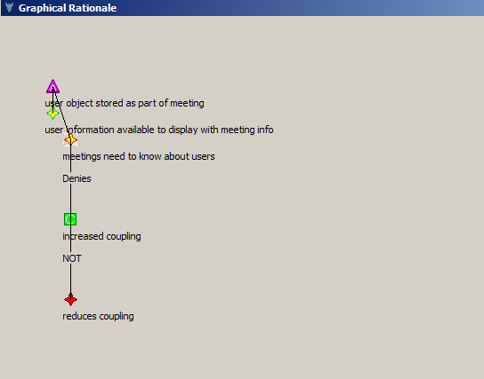

SEURAT provides an alternative to the tree view in the Graphical Rationale view. This view can be accessed either by selecting "Show Graphical Rationale" from the Rationale Explorer drop-down menu (to show graphical rationale for the whole tree) or by right-clicking on an element in the Rationale Explorer and selecting "Show Graphical Rationale From Here". This latter option can be useful if you just want to see a sub-set of the rationale in the graphical view.
You can use the Graphical Rationale view to get a different representation of the rationale database and the relationships between rationale elements. It can sometimes be difficult to see the ways in which certain kinds of elements are related when using the tree view only. Graphical rationale accomplishes this in a more user-friendly way.
